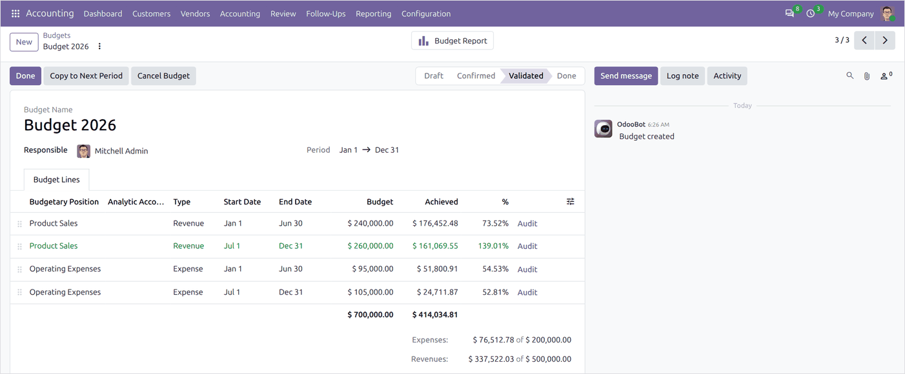
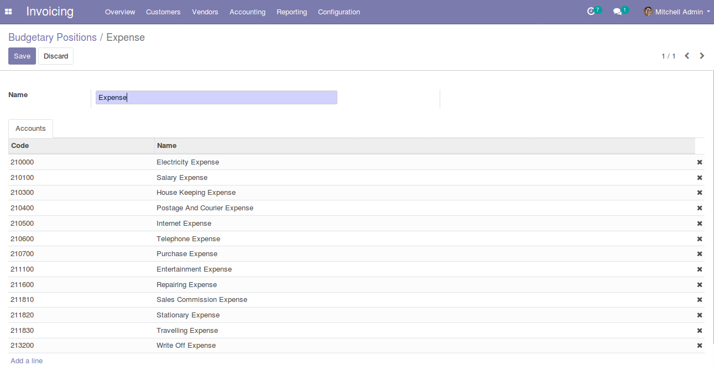
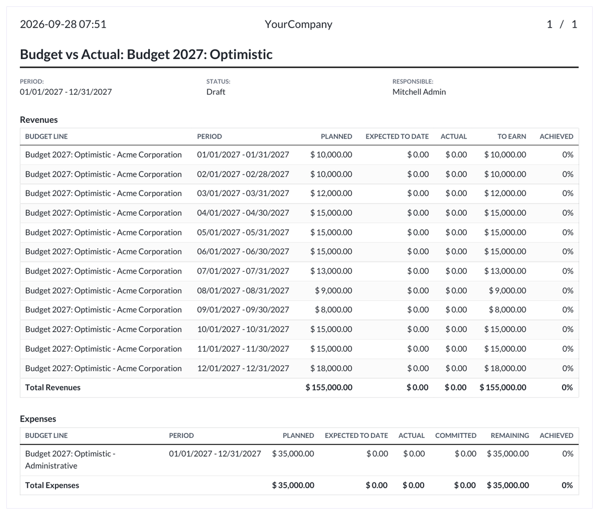
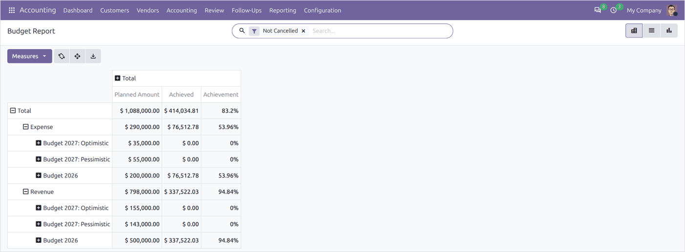

Plan by budgetary position, by analytic account or by both, and follow on every line what was planned, what was expected by today and what has actually been spent.
A budget covers a period and holds one line per budgetary position or analytic account. Each line shows the planned amount, the theoretical amount expected by today, the actual amount posted and the achievement.

A budget with its lines and the amounts achieved.
A budgetary position is a named group of accounts, and it is what a budget line is measured against.

Budgetary positions and their accounts.
Vendor bills that would push a line over its plan show a warning banner while they are still drafts.
A Budget vs Actual PDF for the file, and a budget analysis in pivot, list and graph views for the screen.

The Budget vs Actual PDF.

Budget analysis.